Mechanical Engineering, Harvard SEAS ’29
R&D lead at Harvard Undergraduate Aerospace Collective – Rocketry, where I designed a 250 lbf regeneratively cooled liquid bipropellant rocket engine. I ran the combustion and cooling analysis, sized the injector, did the structural work and the CAD, and machined the injector assembly. The design passed external review in August 2026 and is going to print.
At the Harvard Microrobotics Lab I work on the Pangolin wildlife telemetry drone and on fabrication process development for RoboBee.
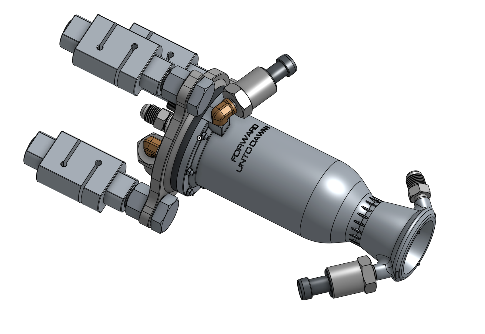
FUD-1 — engine assembly, injector manifold through nozzle exit
01 — Primary Project
FUD-1 “Forward Unto Dawn” · Harvard Undergraduate Aerospace Collective – Rocketry
A 250 lbf nitrous oxide / 90 % ethanol regeneratively cooled liquid bipropellant rocket engine. Ground test article, 2 s first burn extending to 5 s. The sections below follow the order the work was actually done: combustion analysis, geometry sizing, verification, cooling, injector, structures, CAD, manufacturing, and test.
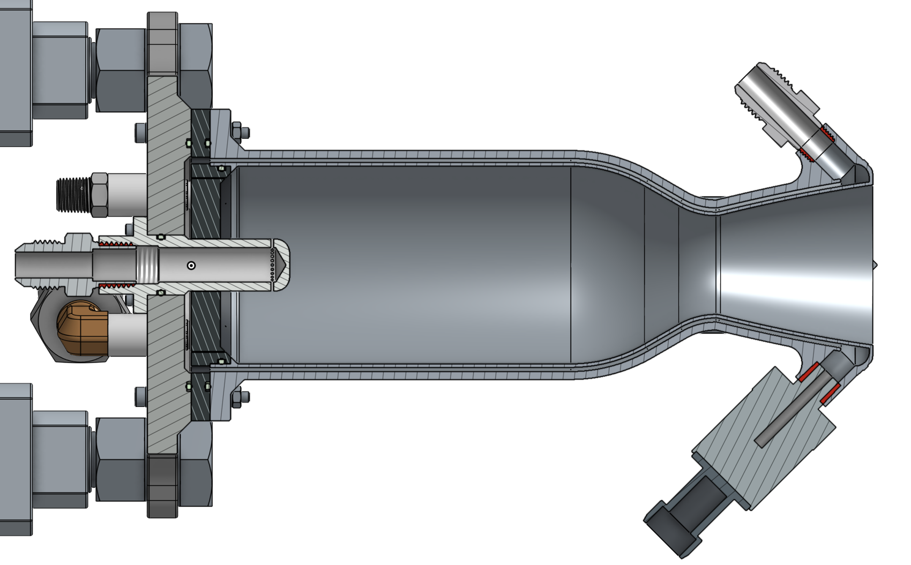
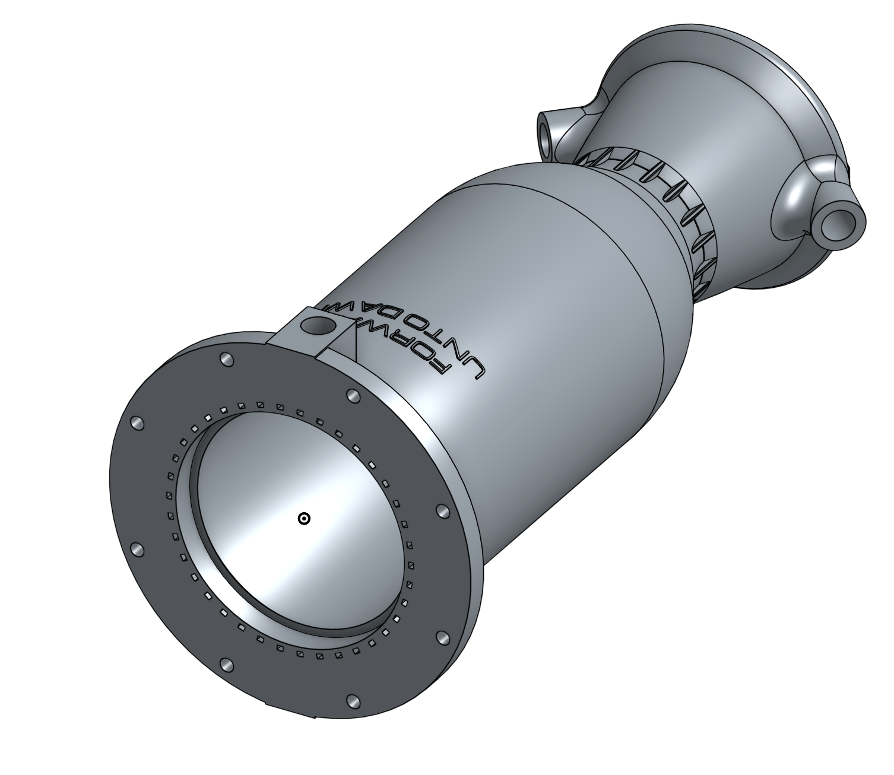
NASA CEA · RocketCEA · Google Sheets
I started in NASA CEA to get equilibrium combustion properties across a range of O/F ratios for nitrous oxide and ethanol at 200 psia. Two decisions came out of that sweep.
Fuel blend. Adding 10 % water by mass lowered combustion temperature from 2 945 K to 2 868 K and lowered exhaust molecular weight from about 25 to 23.1. Because Isp scales with √(T/M), the drop in molecular weight offsets the drop in temperature — ideal Isp came out slightly higher while the thermal environment got easier. Water also has roughly twice the specific heat of ethanol, so it carries more heat on the coolant side as well.
O/F ratio. Peak Isp sits near O/F 4.2–4.4. I first sized at 4.1, but the cooling analysis in step 4 came back at roughly 1 400 K on the throat wall, which SS316L cannot survive. Running fuel-rich at O/F 3.0 lowers flame temperature and frees up fuel mass flow for regenerative and film cooling. The Isp cost is small next to the thermal margin gained.
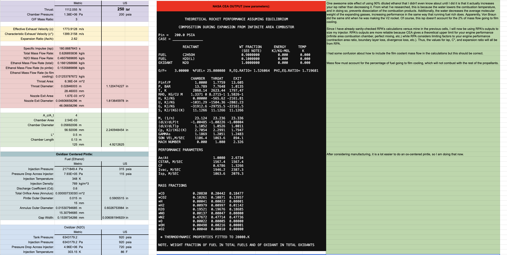
Google Sheets, derived from CEA outputs
With combustion properties fixed, I sized the chamber and nozzle from first principles rather than reading dimensions out of a solver. Throat area from required mass flow and C*, exit area from the expansion ratio at sea level, chamber volume from a selected characteristic length, mass flow split by O/F. Keeping it in a spreadsheet meant changing one input — O/F, film cooling fraction, thrust — updated every downstream dimension.
I set L* = 500 mm and Ac/At = 4.0. The contraction ratio matters more than it first looks, because it sets chamber gas velocity, which feeds straight into the finite-area-combustor correction in the next step.
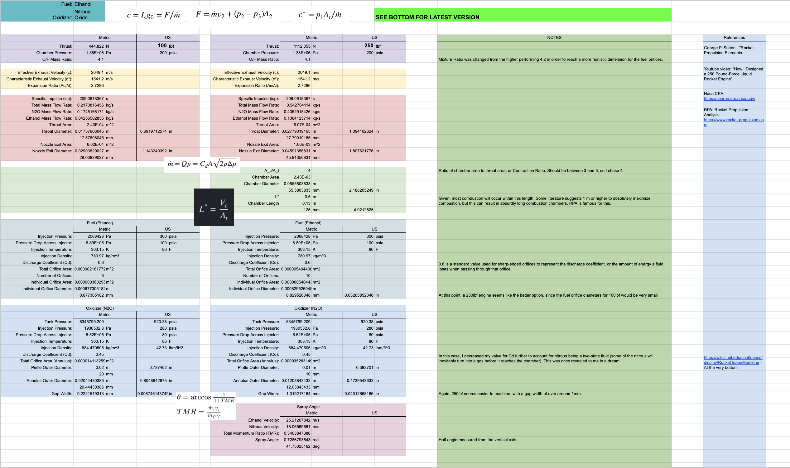
Rocket Propulsion Analysis, finite area combustor mode
I rebuilt the engine in RPA to check the spreadsheet. My hand calculations landed within 5 % of RPA, but RPA returned lower C* and Isp than CEA had, which I first treated as an error in one of the two models.
CEA assumes an infinite area combustor — the gas is stationary at the injector face. I had RPA set as a finite area combustor at Ac/At = 4.0, which accounts for the gas already moving as it reaches the nozzle inlet. That momentum has to come from somewhere, and it shows up as reduced C* and Isp. Neither tool was wrong; they model different assumptions, and a real chamber performs slightly worse than an infinite one. FAC is the right assumption for real hardware, so I carried RPA's numbers forward.
From there I designed against RPA's estimated (delivered) performance rather than ideal — 180.9 s Isp, 1 399 m/s C*. Sizing an injector or a feed system against ideal numbers produces hardware that underdelivers on the stand.
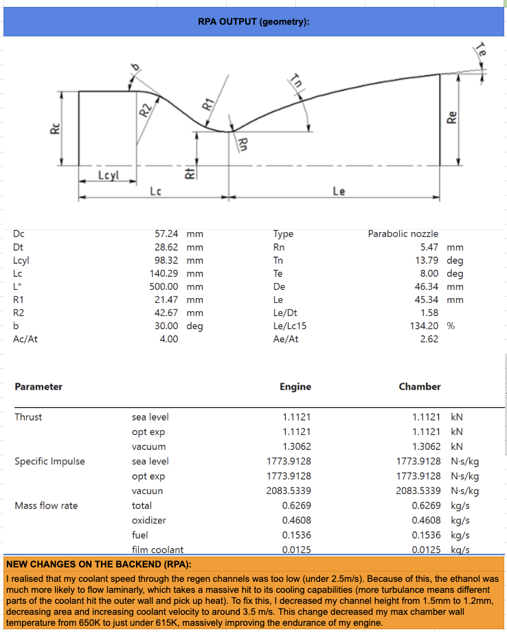
RPA thermal module, iterated against geometry
The cooling design went through the most iterations. I started with a configuration that ran far too hot for the material and changed one variable at a time until the wall temperature came down to something SS316L can handle.
| Configuration | Max Twg at throat | Outcome |
|---|---|---|
| No film cooling, O/F 4.1, SS316L | ~1 400 K | Rejected |
| 2 % film cooling, O/F 4.1 | 910 K | Marginal |
| O/F 3.0, 90/10 blend, helical channels | 625 K | Unprintable geometry |
| O/F 3.0, 90/10, axial, 1.5 mm channel height | 650 K | Coolant too slow |
| O/F 3.0, 90/10, axial, 1.2 mm channel height | 636 K | Selected |
| Conservative bounding case | 750 K | Used for stress |
At 1.5 mm tall the coolant was moving under 2.5 m/s, which put the flow near the laminar boundary. Laminar flow in a cooling channel is a real problem — without turbulent mixing, only the fluid adjacent to the wall picks up heat and the bulk of the coolant does no work.
Reducing height to 1.2 mm cut the flow area and raised velocity, moving the flow firmly into the transitional-turbulent range. Peak wall temperature came down accordingly. I stopped at 1.2 rather than 0.8 mm because 0.8 sits at the minimum printable feature size and makes powder removal considerably harder.
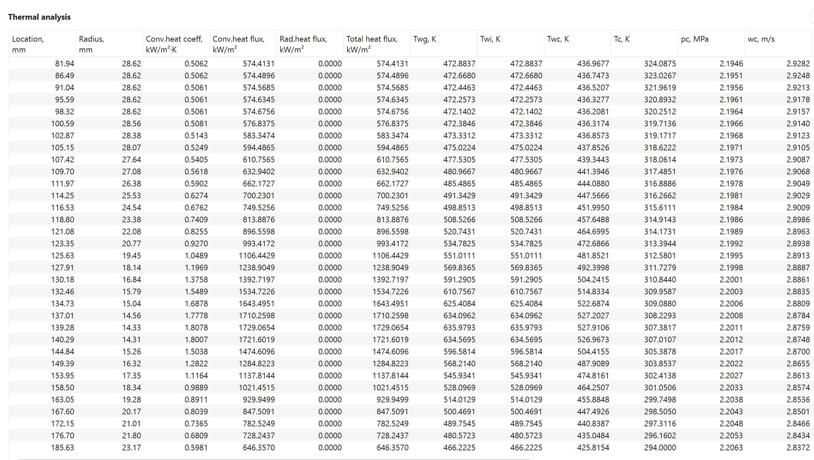
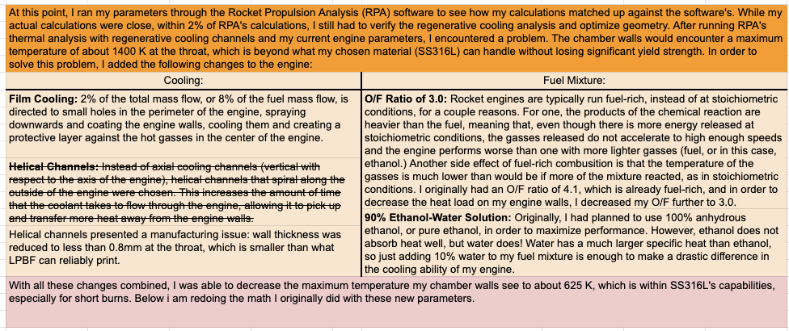
Spreadsheet sizing, Cheng et al. (2019) mixing model
FUD-1 uses an ox-centered pintle. Nitrous flows down the hollow pintle post and exits radially through 24 holes at 0.81 mm. Ethanol arrives from the regen outlet manifold and injects axially through the annulus around the pintle. Film coolant is split off before the annulus and fed through 6 holes at 0.36 mm around the chamber perimeter.
The configuration started fuel-centered and I flipped it for manufacturability. Ethanol already exits the cooling channels on the outside of the chamber, so feeding it into an annulus is a short path; routing it into the center of the post would mean crossing the ox path. At O/F 3.0 with film cooling, the wall impingement concern that motivated fuel-centering is much reduced.
For a continuous-slot pintle the standard approach is total momentum ratio. This design uses discrete orifices, so each jet only interacts with a strip of fuel film equal to the hole diameter. Following Cheng et al., I used local momentum ratio:
Target LMR is 1.5–3, giving a spray angle of 50–70°, with standoff set by Lp/Dp = 1.0–1.5. I did not converge this to a final number. The results I was getting were not consistent enough to design to, and a pintle is inherently stable with L* = 500 mm of residence length behind it, so I treated the spray angle as a sanity check rather than something to optimize on a first engine. It is on the list to revisit with cold flow data, where I can measure the spray angle directly instead of predicting it.
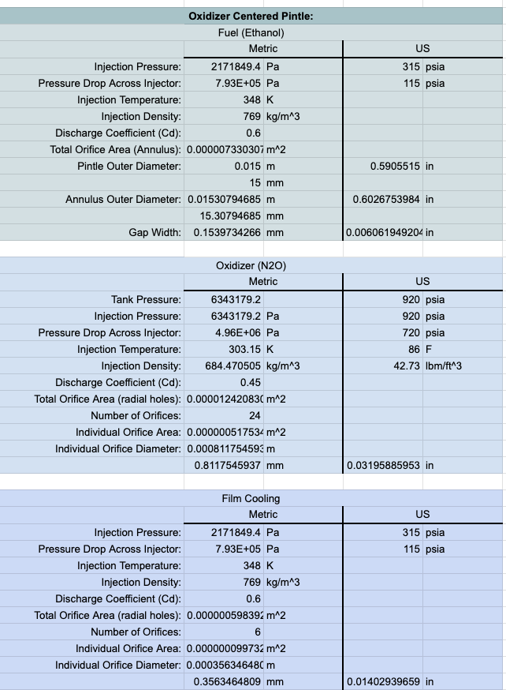
The 0.154 mm annulus gap is very tight, and the harder constraint is concentricity rather than the dimension itself: a pintle that sits off-center produces non-uniform circumferential flow no matter how well the gap is held. Since gap = A/(πD), increasing pintle diameter makes it worse rather than better, which is counterintuitive until you write it down. Options remain reducing pintle diameter, lowering fuel ΔP further, or moving to discrete fuel orifices and relying on the generous L* for downstream mixing. This was still an open item going into the design review.
Hand calculations, checked against SimScale FEA
Once geometry and thermal results settled I went through the pressure-bearing structure by hand. Loads are modest — 200 psi chamber, 300 psi coolant, 250 lbf axial — so closed-form checks are appropriate and faster than meshing everything. I ran four hoop stress cases, using 316L yield of 170 MPa at 300 K for the outer wall (which sits at coolant temperature) and 110 MPa at 580 K for the inner wall.
| Case | t | Stress | SF |
|---|---|---|---|
| Outer wall, pressurized coolant — the actual load path | 2.0 mm | 32.9 MPa | 5.17 |
| Inner wall, no coolant, no ribs — worst-case bound | 1.0 mm | 40.2 MPa | 2.74 |
| Inner wall, net compression from coolant | 1.0 mm | 20.1 MPa | 5.48 |
| No coolant, composite wall | 3.0 mm | 13.8 MPa | 7.95 |
The outer wall case describes normal operation. The other three are bounding cases covering what happens if the coolant stops doing its job, so they should be read as limits rather than as a range of expected values.
One correction along the way: I originally used 4.2 mm of composite wall by summing 1.0 inner + 1.2 channel + 2.0 outer. The 1.2 mm channel is void, not metal, so only 3.0 mm carries load. Also checked: local bending of the inner wall between ribs, treated as a fixed-fixed strip over the 1.5 mm channel span, comes out near 0.8 MPa — three orders of magnitude below the global case, so the ribs are doing their job. Injector bolts are 8 × M3 at 444 N per bolt against 2 264 N yield, SF 5.1.
With E = 175 GPa, α = 1.8×10⁻⁵ K⁻¹, ΔT = 108 K across the inner wall and ν = 0.3, the thermal stress comes out at 243 MPa against 110 MPa yield. The hot wall yields in compression.
This is normal for regeneratively cooled chambers and does not put the engine at risk of bursting, since hoop stress is only 40 MPa against a 110 MPa allowable. What it does mean is that the life of the chamber is governed by low-cycle fatigue rather than by static strength. Over the handful of 2–5 second burns planned here that is not a concern, but it would be for an engine meant to run hundreds of cycles. The 243 MPa figure also assumes the wall is perfectly restrained, and in reality some of the expansion is free, so the true stress is lower.
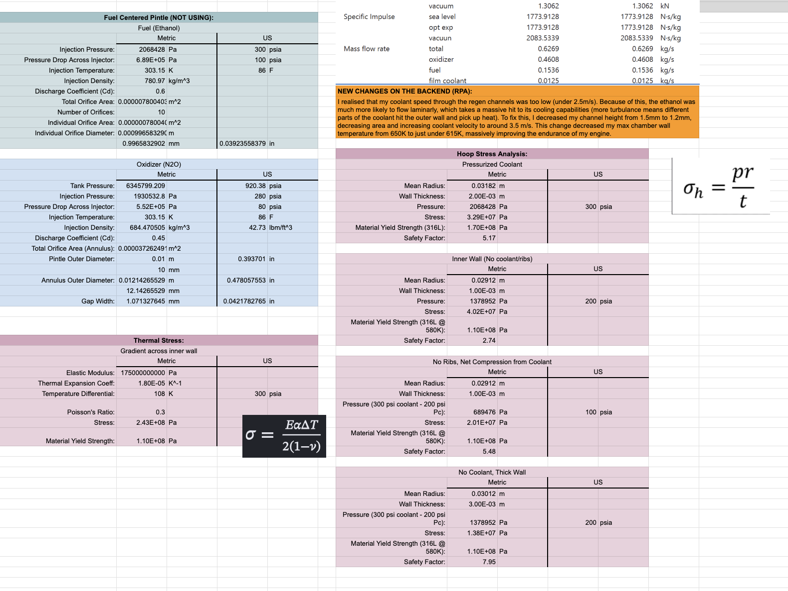
Onshape
CAD only started once RPA geometry was final, so the model was built against fixed numbers rather than moving ones. Workflow: import the RPA contour DXF, revolve, offset the inner wall, sketch the channel cross-section, extrude axially, circular pattern 38 times, boolean, then add the inlet and outlet collector manifold rings at each end.
I modelled the channels as arc wedges following the wall curvature rather than plain rectangles, which keeps the inner wall thickness genuinely constant around the circumference instead of only at the channel centerline.
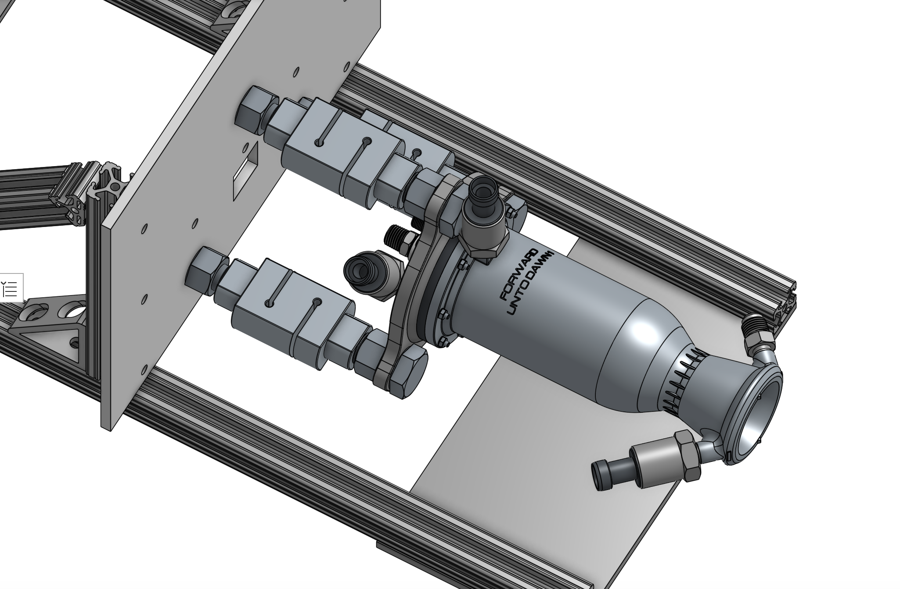
SimScale FEA
The stand carries a person-safety load path, so it got a simulation rather than an assumption. I modelled the full assembly — extrusion frame, gussets, and the steel thrust plate — under the 250 lbf thrust load to confirm both that the structure holds and that it is stiff enough not to corrupt the load cell readings. The thrust plate turns out to be the compliant element; the frame carries the load with very little participation in the deflection.
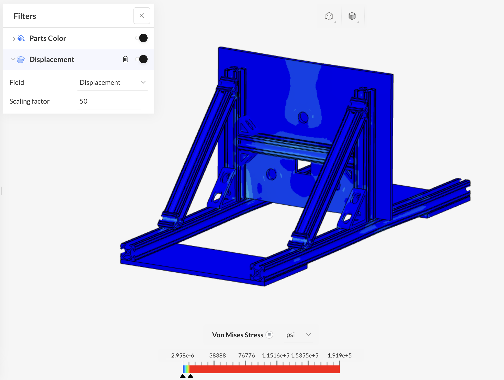
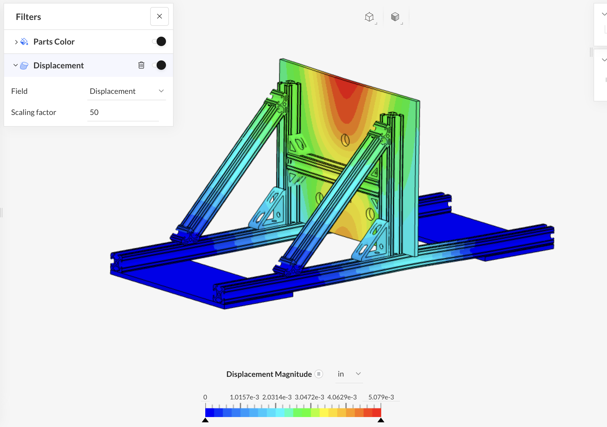
The load cells matter more than the frame stiffness. They read force on one axis only, so the engine plate floats on three ball-tipped mounts in a triangular pattern with the centroid on the thrust axis, and propellant lines and instrumentation wiring have to be flexible enough not to introduce side loads into the measurement.
LPBF SS316L, manual lathe and mill, CNC
The chamber and nozzle print as a single SS316L part with the cooling channels printed in. All threads, sealing faces, and small holes are post-machined — printing threads directly adds thousands to the quote, and post-machining printed parts is standard practice.
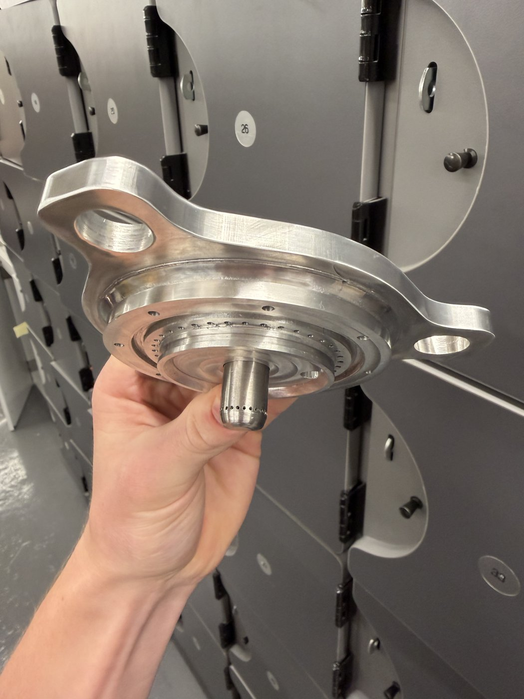
While hand-tapping an NPT thread into the pintle, the part spun in the collet block and the thread was damaged. The collet held fine for cutting loads but not for tapping torque, which comes on suddenly and acts at a large radius.
What I took from it was a sense of how much clamping force tapping actually needs, which I hadn't thought about carefully enough beforehand. The printed chamber also has NPT ports that need tapping, and it is a much more awkward part to hold — thin walls and no flat surfaces. So I designed holding features into it directly: flat feet and square clamping pads on the chamber body, with matching pockets machined into 45° aluminum soft jaws. The pads locate the part and the pockets take the tapping torque in bearing instead of relying on friction. I also settled on a few rules for the operation: drill on the mill, hand tap only, orient the part so tapping torque pushes it into the fixed jaw, and never clamp across the 2 mm chamber wall.
Both LPBF vendors disclaim that unsintered powder may remain in internal features. For 1.5 × 1.2 mm channels at 140:1 length-to-diameter, that means restricted coolant flow and metal particulate in the propellant path. At a 1.33 mm hydraulic diameter against 15–45 µm powder the geometry itself is not the problem, and choosing axial over helical channels is the single decision that most helps depowdering.
The harder problem is detection. One blocked channel out of 38 is 2.6 % of flow area and shifts pressure drop by roughly 5 %, which is inside prediction uncertainty; a mass check is worse still, at a few grams on a part over a kilogram. Neither obvious verification method finds it. The method that does work is flowing warm water and imaging the outside with an IR camera — 316L conducts poorly enough at 16 W/m·K that a blocked channel shows up as a cold streak.
Two outside reviewers, August 2026
Before committing to an irreversible print I took the design through review with two outside engineers: a former fluids lead at Firefly Aerospace, and a propulsion engineer who does contract work for Relativity Space. I scheduled the review specifically because the print had not been ordered yet, and I split the agenda into what was already frozen and what was still open so their time went to the parts I could still change.
The reviewer raised ethanol boiling in the cooling channels. At the coolant-side wall temperature of 528 K and channel pressure of 2.19 MPa, ethanol's saturation temperature is around 460–470 K, so boiling is plausible.
Two-phase flow raising pressure drop is the manageable version — the stress margins cover it. The version that matters is critical heat flux at the throat: if bubbles merge into a continuous vapor film, the heat transfer coefficient collapses in milliseconds and the throat burns through. No amount of structural margin helps with that. Whether the throat sits below CHF is currently unanswered, and it is the open item I most want closed before hot fire.
There is also a feedback path worth naming: fuel goes from a ~350 psi regulator to a 315 psia injector, so the whole tank-to-injector pressure budget is about 35 psi. If two-phase flow triples the regen circuit's share, injector pressure falls, fuel flow falls, the chamber runs oxidizer-rich and hotter, and the boiling gets worse. The cheap mitigation is instrumenting regen ΔP by difference between the two transducers already in the design and making out-of-band ΔP an abort trigger rather than a post-test finding.
Cold flow before hot fire · Harvard EHS standard operating procedure
The team's previous liquid engine, Mojave Sphinx, failed at its static fire attempt. The documented failure modes were the starting point for FUD-1's test requirements, so each one is a constraint on the design or the procedure rather than a lesson noted afterward.
| Mojave Sphinx failure mode | FUD-1 requirement |
|---|---|
| No cold flow test before hot fire | Cold flow with mock propellants — water for fuel, CO₂ for oxidizer — before any hot fire, to measure spray angle against prediction, find manifold fill times, and confirm no leaks |
| Wrong fitting sizes found on test day | Complete fit-check of every fitting at assembly, weeks ahead |
| PTFE tape on high-pressure oxidizer threads | AN flare and O-ring face seals throughout. No tape on oxidizer service — liquid nitrous flashes at any restriction and the expanding two-phase flow shreds unbonded tape into the stream |
| Nitrous drawn from the vapor phase | Siphon-tube bottle, with orientation and liquid draw verified during cold flow |
| Inadequate test stand | Purpose-built stand, structurally checked, with remote firing and camera observation |
I co-wrote the standard operating procedure for Harvard EHS approval with the team's chief engineer. It documents propellant quantities and storage, transport, PPE by project phase, machine-shop training status by tool and risk level, hazard classification for N₂O, CO₂, nitrogen and anhydrous ethanol, emergency planning, and the site plan — cold flow on campus, static fire off-site at a field in Connecticut.
Abort logic is part of the safety case, not an afterthought: remote valve actuation with automatic shutoff on overpressure or on an unexpected pressure drop.
The full standard operating procedure is linked at the top of this section along with the design review deck.
02 — Research
Pangolin · Undergraduate Researcher, Harvard Microrobotics Lab
A hexacopter carrying a 150 MHz VHF receiver, built to locate pangolins wearing radio tracking tags. Conventional VHF wildlife tracking is done on foot with a handheld Yagi, which is slow and range-limited by terrain. Putting the receiver in the air raises the antenna and extends line of sight; the eventual goal is airborne direction finding using antenna azimuth to fix an animal's position. The aircraft is being prepared for field deployment in Nigeria.
I took this project over from a student who left the lab, inheriting a partially built aircraft that had never been powered on and a receiver stack nobody currently in the lab knew how to operate. Getting it from that state to a flying aircraft, a printed antenna mount, and a receiver holding a tag at 429 m on foot was the work.
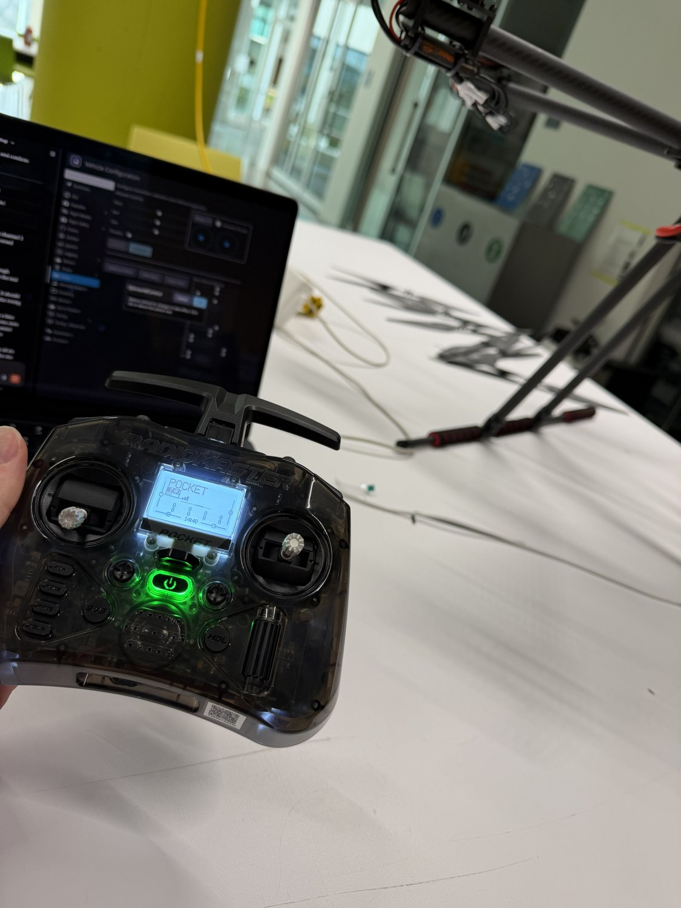
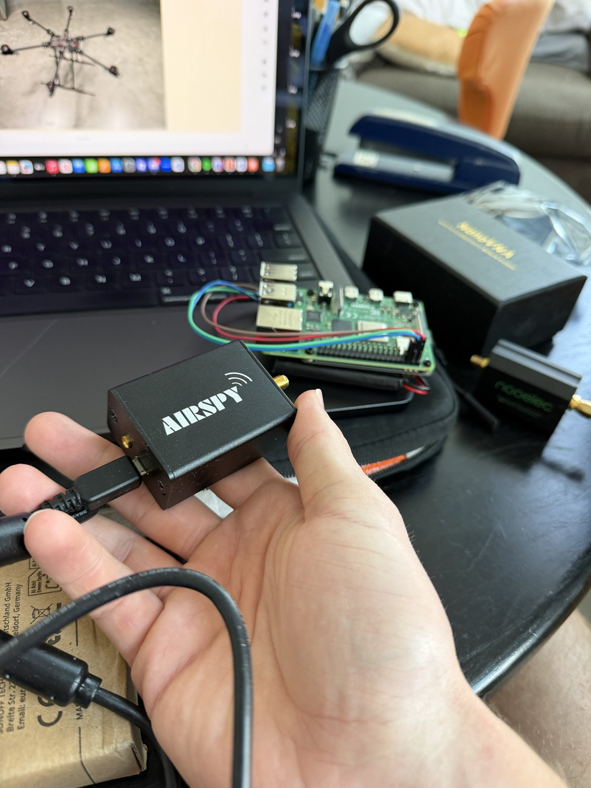
The aircraft flies and the receiver works at range. I am still flight testing it and working through stabilization issues, and the antenna mounts are being printed and fitted before the airframe gets packed for shipping.
The next milestone is flying the receiver payload rather than carrying it, so the whole system gets tested together instead of in two halves.
The receive antenna is an H — two dipole elements on a boom — which has to sit on the aircraft somewhere it can see the tag. A few constraints narrowed down where it could go: the carbon landing legs cannot be drilled without weakening them, the elements have to stay clear of the prop discs, and the assembly has to be roughly symmetric so it does not shift the center of gravity or bias the aircraft in yaw. The antenna ends up tied in across all four landing legs, which spreads the load and keeps it balanced, and that left the leg clamp as the part I actually had to design.
The aircraft has to be disassembled and shipped to Nigeria for field testing with pangolins, then rebuilt once it arrives. That means the mounts are mostly there to keep the antenna in the same position through every disassembly and reassembly. If the antenna ends up sitting slightly differently each time, its pattern relative to the airframe changes, and any direction finding built on top of it inherits that error.
Because the job is locating rather than carrying load, I split the two functions. Zip ties take the structural load and the antenna is also tied directly to the landing legs, so the printed parts only have to define where everything sits. The one joint that does need to be bolted is the clamp onto the landing leg, since that is the interface that should never move.
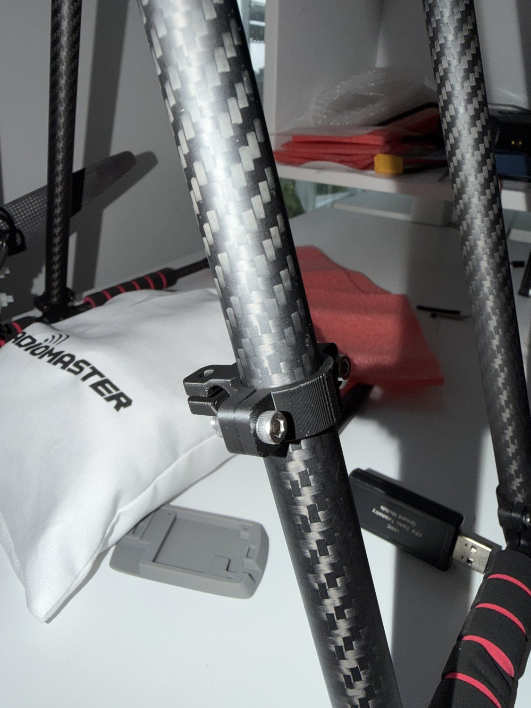
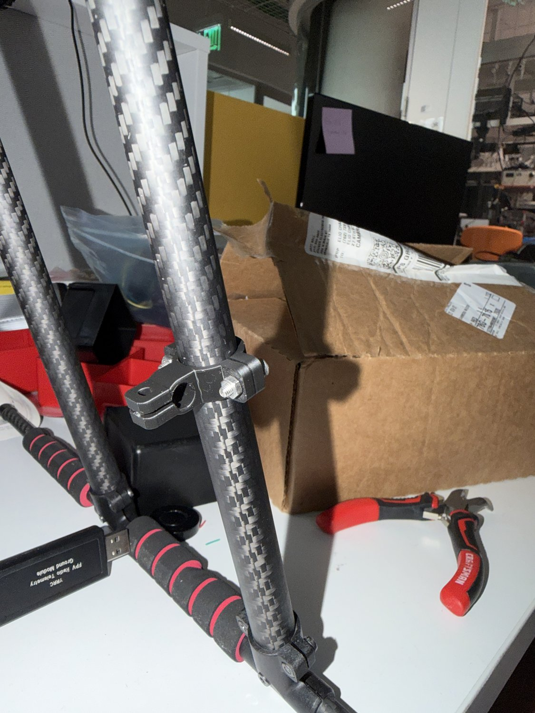
I tested V1 on the legs and got no slipping at all, which told me the clamp design worked and that friction alone holds position on carbon tube without putting fasteners through it. With that settled I reworked the antenna side of the mount into an open semicircular saddle, so the element drops in from above and gets tied down instead of being threaded through a closed bore and screwed in place. It locates just as well, there is no hardware to lose in the field, and it goes together much faster.
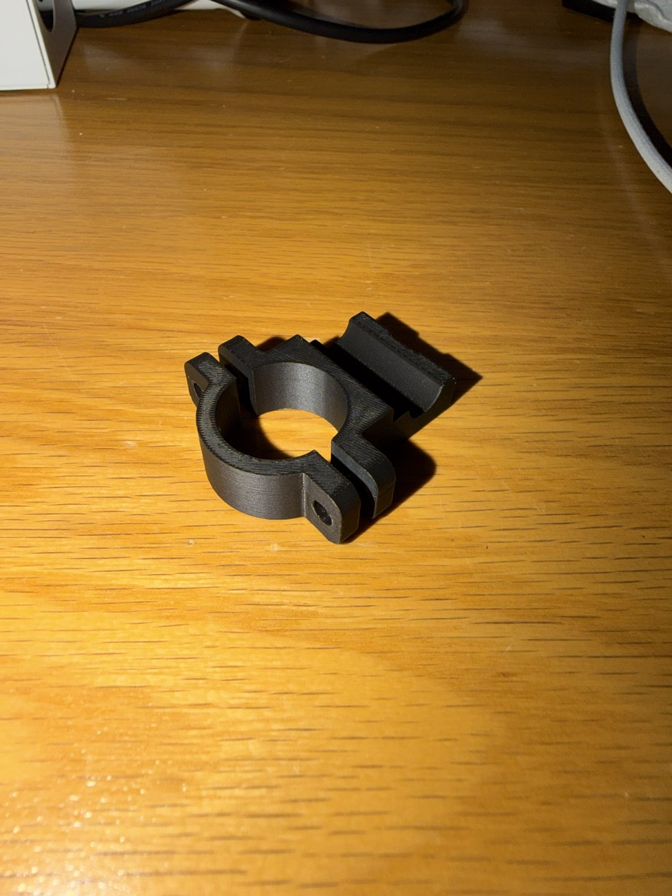
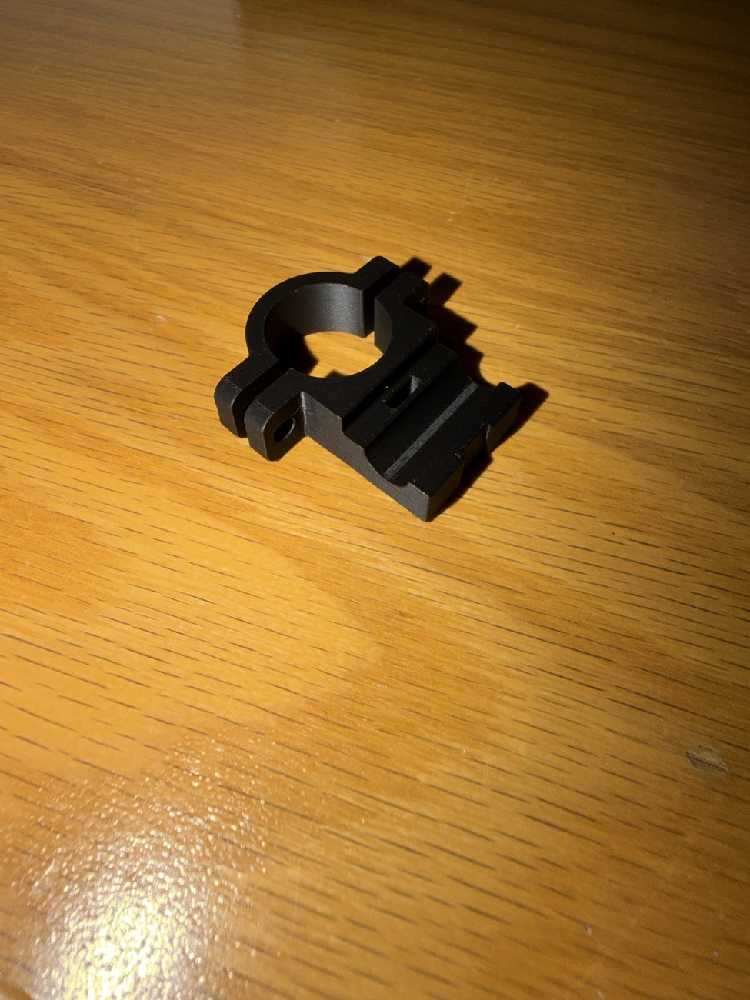
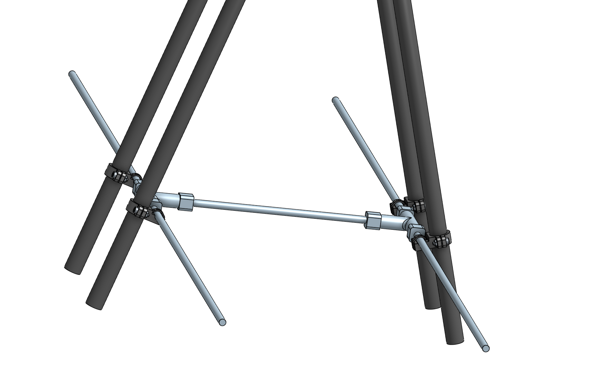
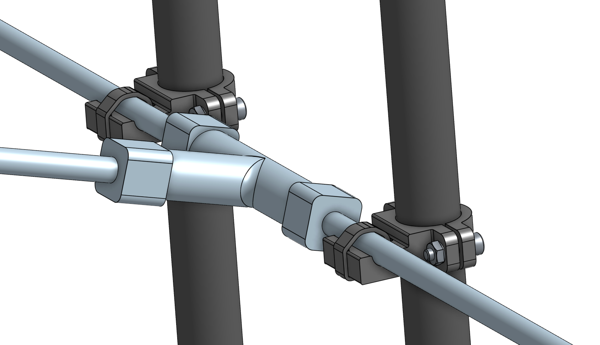
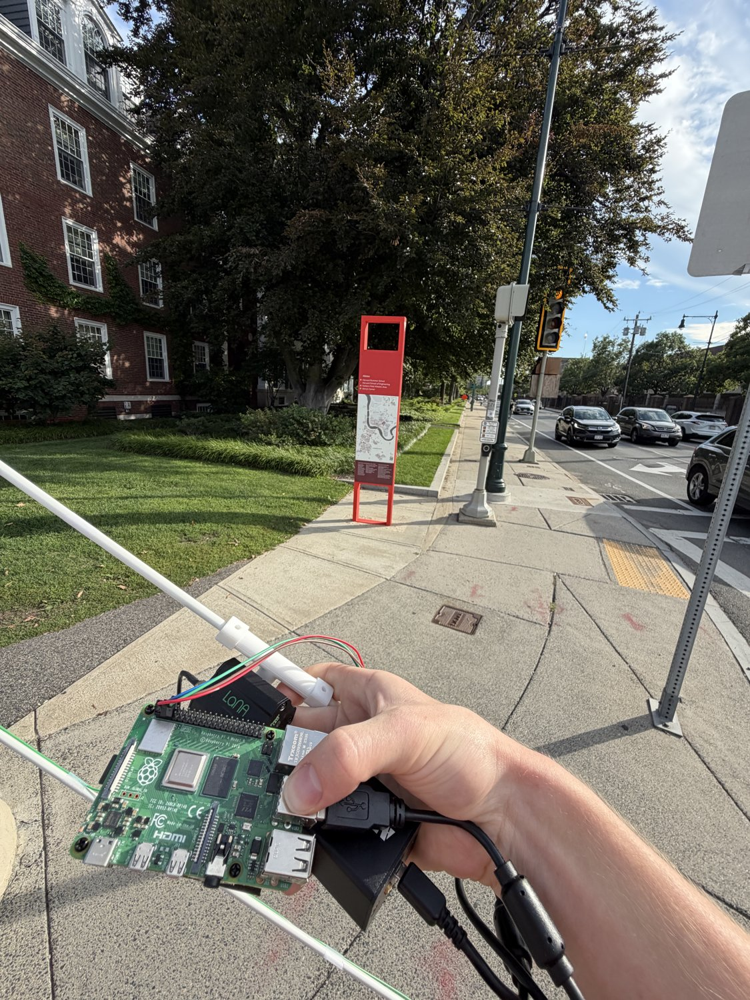
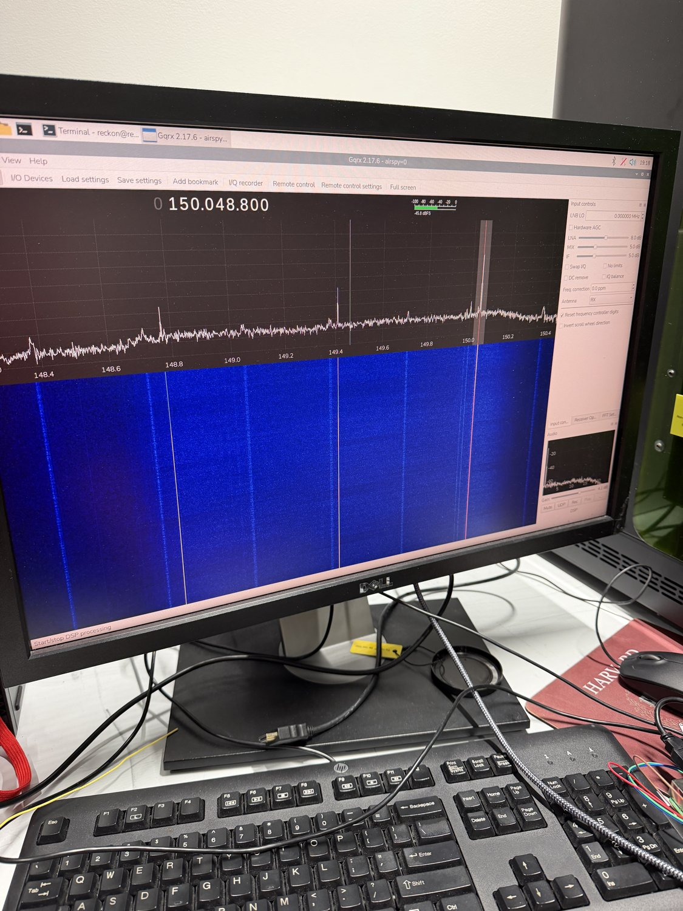
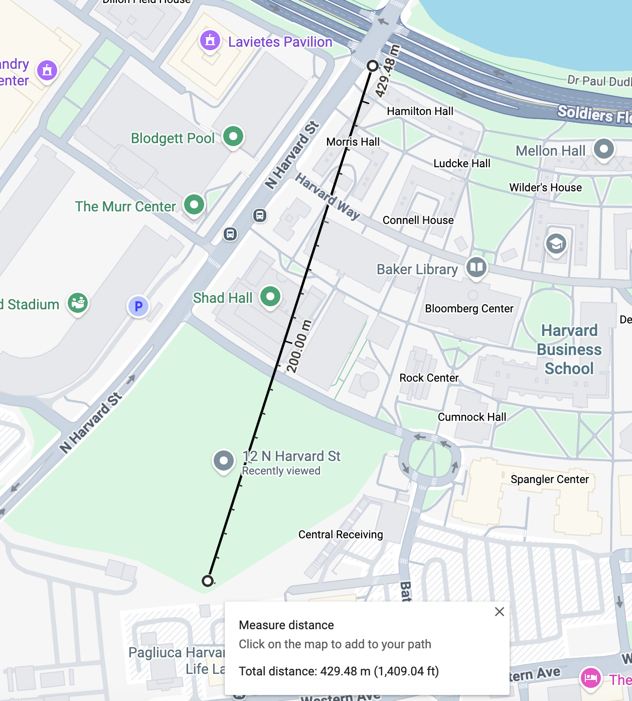
The rig had to be usable while walking across a field. I put the Pi on a battery HAT and set up remote desktop access over a phone hotspot, so I could watch the live waterfall on my phone with no monitor and no mains power. Distance came from map pin-drop.
Reading the spectrum was its own step. Two steady carriers near 148.8 and 149.4 MHz look exactly like a signal until you walk away from the tag and they do not change — they are ambient RF, not the thing I was tracking.
The first range test detected the tag out to roughly 10 m, against an expectation of hundreds of meters for comparable wildlife tag setups. In free space every factor of ten in distance costs about 20 dB, so that is a ~40 dB hole to account for.
Uncontrolled antenna polarization was the obvious suspect, but even worst-case cross-polarization realistically accounts for 20–30 dB, never a true null, because ground bounce fills it in. So polarization could explain at most half to three quarters of the gap. Something else was wrong.
I had been assuming the tag was at fault, but the problem turned out to be in the receive chain. Adding a low-noise amplifier inline between the antenna and the SDR took detection range from 10 m out to 429 m, a factor of 43, or about 33 dB of recovered link budget.
An improvement that large points at the system noise figure rather than at the transmitted power. In a receive chain the first stage dominates, because its gain divides down the noise contribution of everything after it. Without an amplifier at the front, feedline loss and the SDR's own noise figure set the floor directly, and a weak 150 MHz tag sits below it. Adding a low-noise, high-gain stage ahead of everything else brought the floor down far enough to hear the tag at range.
The tag transmits a continuous carrier rather than the designed 1 Hz pulse train. That is a real defect independent of the range problem: it destroys the coin-cell battery life the tag was designed around, and it points at the pulse-timing network being mispopulated or the transistor biased hard on.
Diagnosing it properly means a vector network analyzer on the antenna feed while powered and transmitting rather than on the antenna alone, plus a current draw measurement against the design figure.
Even with the good result, the test recorded a cutoff distance rather than a signal-versus-distance curve, and receiver gain was not locked — signal strength in dBFS means nothing across a walk if the gain moves underneath it.
The next run locks gain, logs a reading at every stop, and treats polarization as a controlled variable measured matched and crossed as best and worst case. A circularly polarized helical tag antenna is on the build list: it costs a fixed ~3 dB but removes the deep nulls a rolling, climbing animal would otherwise produce.
03 — Research
RoboBee · Undergraduate Researcher, Harvard Microrobotics Lab
Developing a process to fabricate RoboBee's laser-cut composite wings on a $6,000 laser cutter instead of the roughly $500,000-class equipment the published process assumes, while holding the same micron-scale tolerances. Work done with Christian Salehi, Sam Oubala, and Ian Zhang, supervised by a graduate student in the lab.
RoboBee is a 259 mg flapping-wing micro aerial vehicle with a 3.5 cm wingspan, roughly 100× lighter than the next-smallest comparable vehicle. Its wings are built by the Smart Composite Microstructure method: laser-cut layers of carbon fiber, adhesive, and polymer membrane, laminated and released as a single part. Individual features are as small as 95 μm — comparable to the beam width of the laser cutting them.
The goal was to reproduce that process on the lab's cheaper laser. Most of the work has been finding where the machine's limitations show up in the part and working out how to correct for them. We kept a shared log of settings and results as we went — open the cut settings spreadsheet.
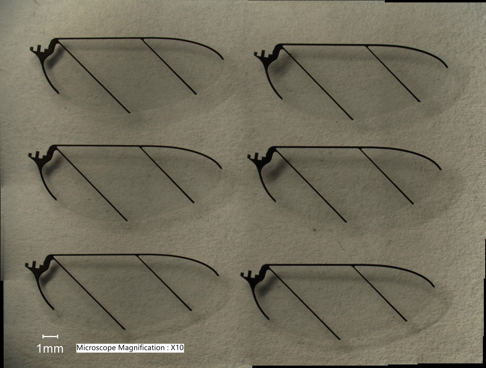
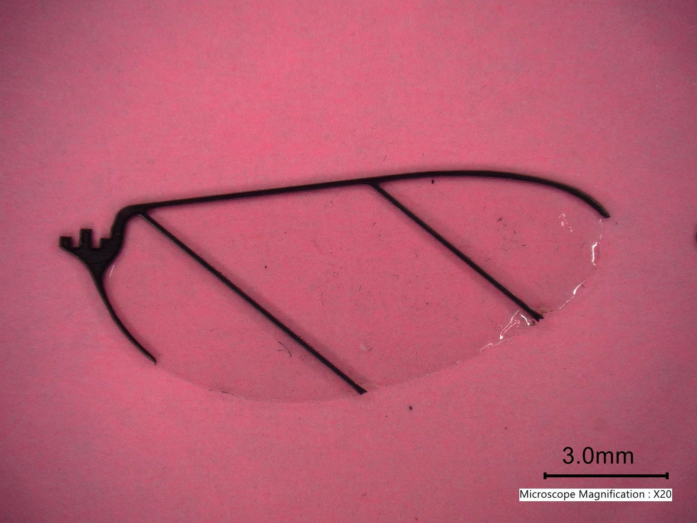
The first stretch of work was mostly systematic sweeps: vary speed, power, pass count and Q-pulse for each material in the wing stack and record what happened. Every cut gets checked under a microscope against two things, whether the part releases cleanly and whether the material burned.
Swept pass count against burn-through into the gelpak backing underneath. Too few passes and the fibers stay intact; too many and the gelpak burns. 100 passes came out as the clean compromise.
2.5 and 3.6 μm cut with little to no burn. 1.5 μm showed slight burning — thin films give the beam nothing to absorb into, so the margin between cutting and scorching narrows.
5 mil cut well. Applying the carbon fiber settings and sweeping pass count down from 50, 20 passes was optimal; 15 left fibers needing tweezer force, 10 did not cut through.
We never got 10 mil FR4 to cut cleanly. Raising the speed as far as about 2000 mm/s made no difference. The usual approach for thick material is refocusing, where you drop the laser by half the material thickness partway through so the focal point follows the cut down into the kerf. That did not work either, and the second half of the cut still came out poorly. I tried half that offset in case the correction was too aggressive and got the same result.
At that point I concluded the material was outside what this laser can do rather than a setting we had not found yet, and we moved on. 5 mil FR4 cuts well, so that is what the design uses.
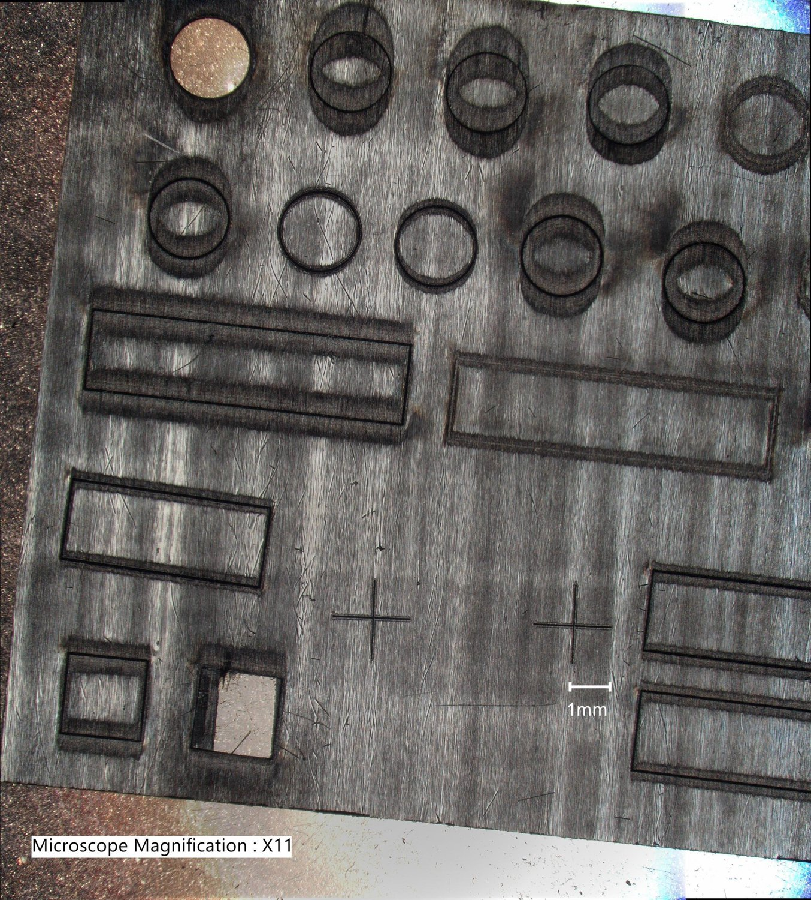
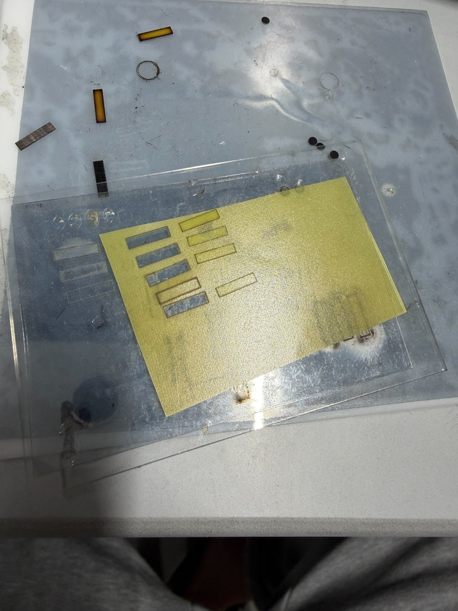
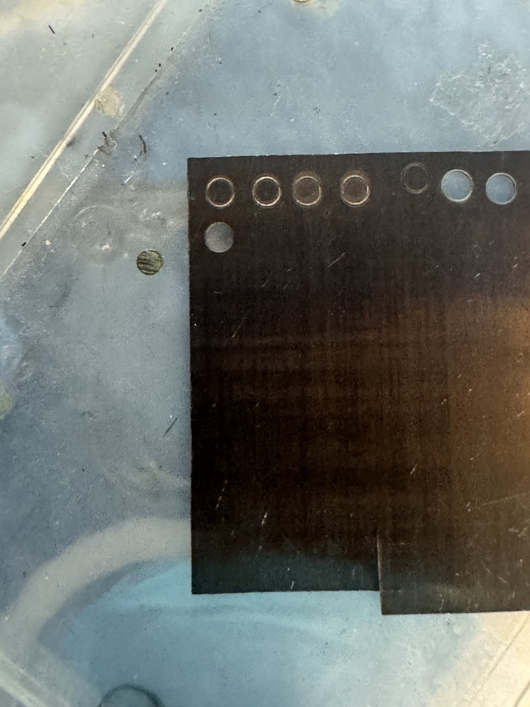
Once parts started releasing cleanly they still measured wrong. Comparing cut parts against the CAD under a scope camera showed everything coming out consistently undersize, which turned out to be because the laser removes material equal to its own beam width. We measured the beam at roughly 85 μm. Since a wing spar is only 95 μm wide by design, that is nearly as wide as the feature itself, so it is not a small correction.
The fix was to offset the cut profile outward and iterate, measuring on the scope after each pass, until the mounting teeth landed at their 250 μm target and the spars at 95 μm. The offset that converged was applied back into the sketch rather than handled by eye, so the correction is now part of the geometry.
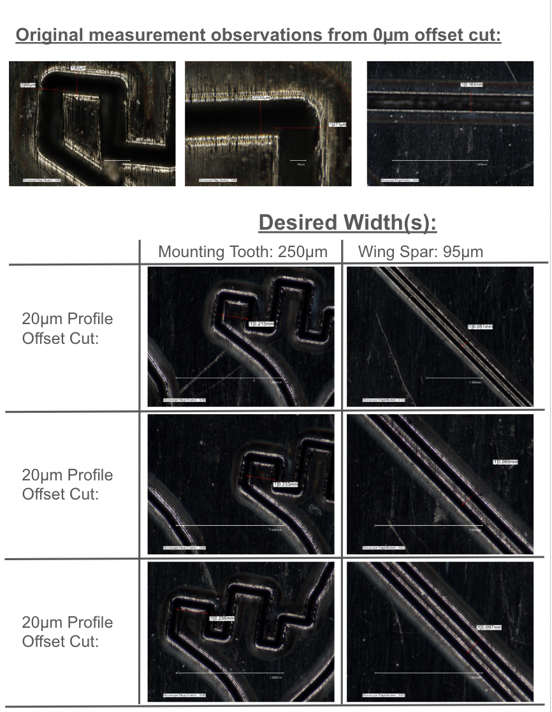
What sits underneath the material turned out to matter about as much as the settings. Cutting carbon fiber and adhesive directly on a steel plate damaged the adhesive layer, and I think two things were happening at once. Steel conducts roughly 50 times better than glass, so it pulls heat sideways through the part, and it also reflects a large fraction of the beam back up into the adhesive from below.
Both are handled by one layer: a sheet of 10 mil FR4 between the part and the steel plate, which is a poor conductor and a poor reflector. The full stack from the bottom up is the steel plate with its alignment support bars, the FR4, adhesive, then the carbon fiber and adhesive laminate. With that fixture in place the same recipe works at a lower pass count, around 160 instead of 200, which gives some idea of how much energy had been going into the substrate.
The wing has features on both faces, so the laminate has to be cut, flipped, and cut again in the same coordinate frame. Rather than buy a precision jig, I put the alignment pin holes into the cut file itself and laser-cut them into every layer of the fixture, so the material registers on the same pins each time.
The thing that makes it work is that the cut sketch has to be centered between the two support bars, so that flipping the part and mirroring the sketch lands in the same place. Any error in that center position shows up doubled in the mirrored cut.
I also tried running the stack with the adhesive layer facing up. It failed in two ways: the membrane became difficult to press onto the stack, and the adhesive melted under the beam instead of bonding, which made release much harder.
Adhesive down is what works. Separately, removing the adhesive backing film before cutting gives noticeably cleaner release than cutting through it. Bonding is done in a hydraulic press at 5000 lb for 5 minutes at room temperature.
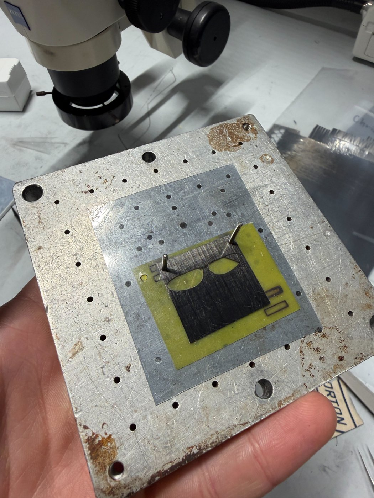
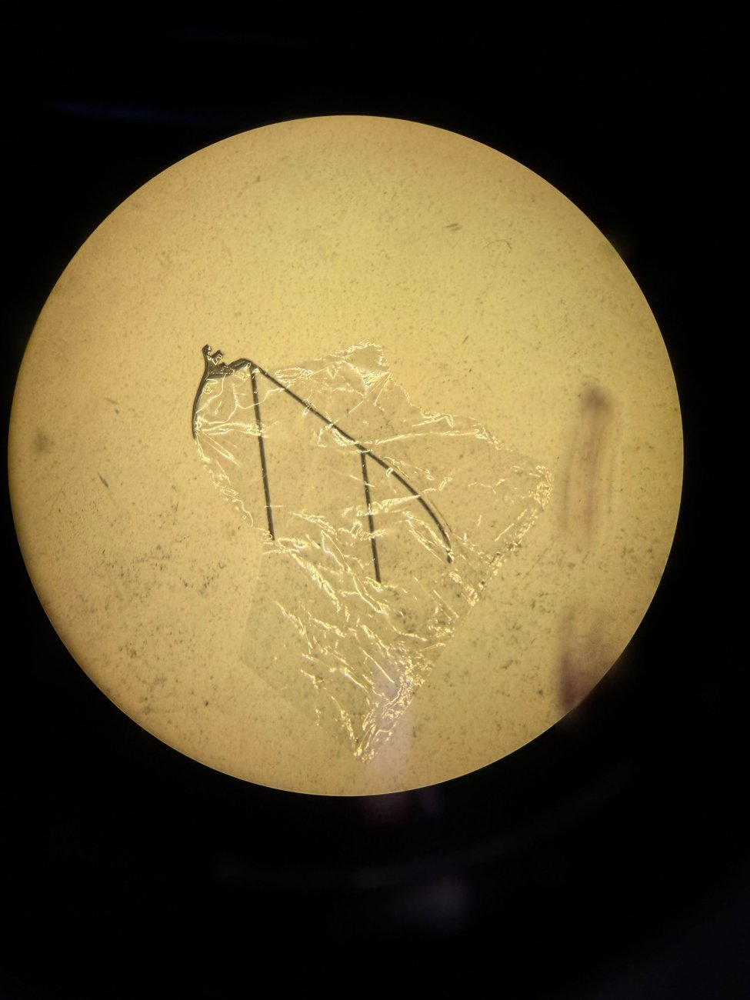
The first attempt at a complete wing cut the membrane and carbon fiber in a single operation. That burned and warped the membrane badly — unsurprising in retrospect, since a 3 μm film and a 170 μm fiber laminate have nothing in common thermally and there is no single recipe that suits both.
I rebuilt it as a multi-layer cut file with separate settings for each layer, colour-coded so any stage can be toggled on and off from the layer panel. The carbon fiber spars, membrane outline, and the release cuts each run in sequence at their own speed, power, pass count and Q-pulse, so each one can be tuned without disturbing the others.
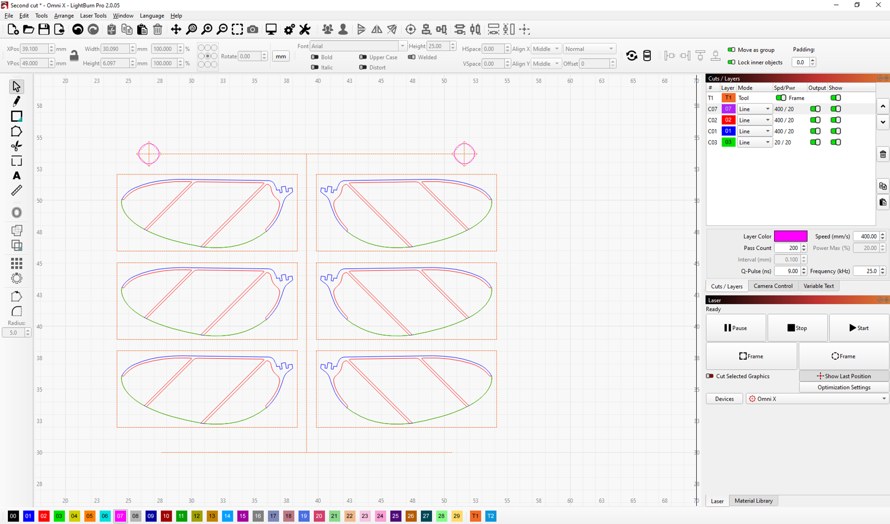
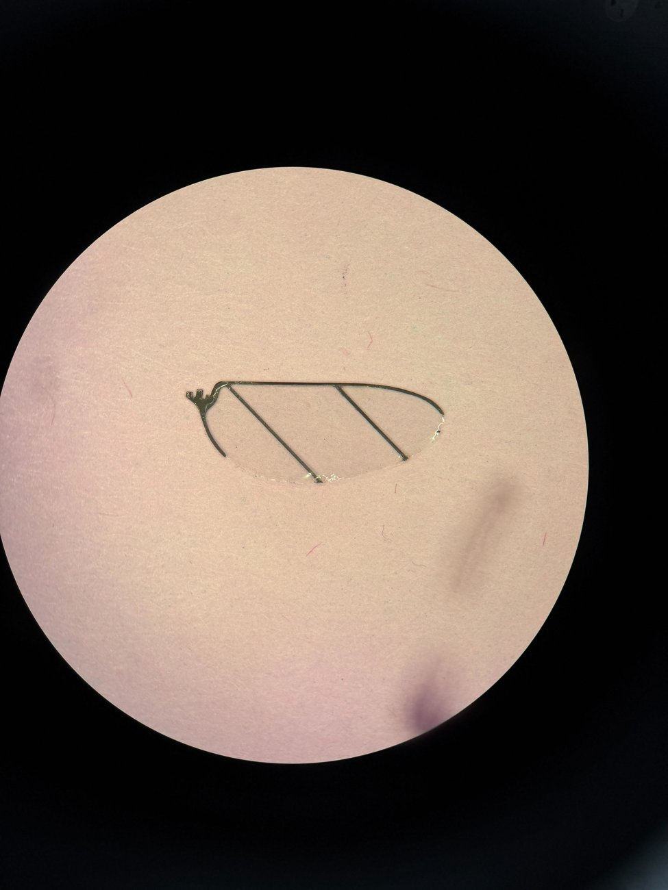
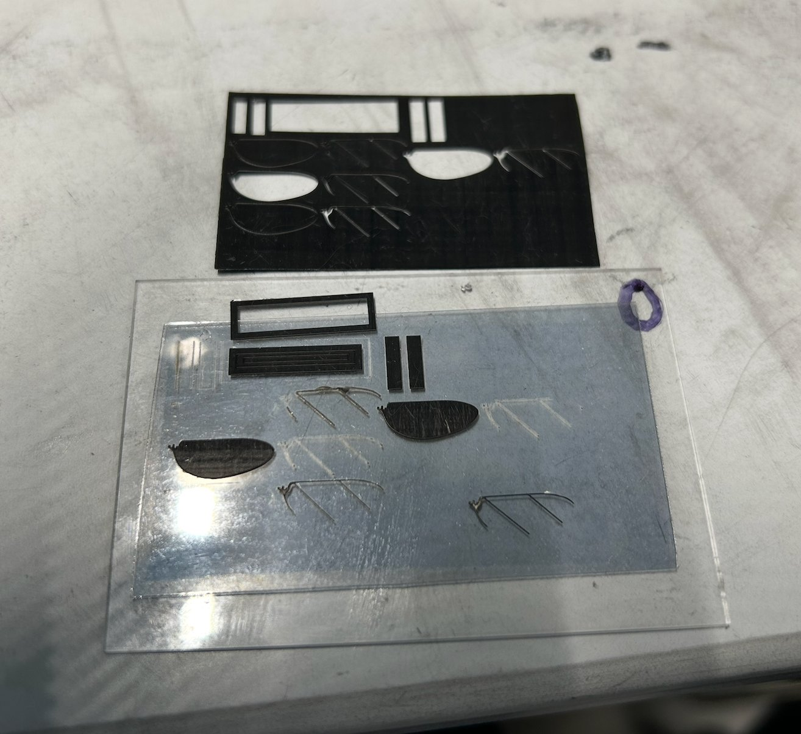
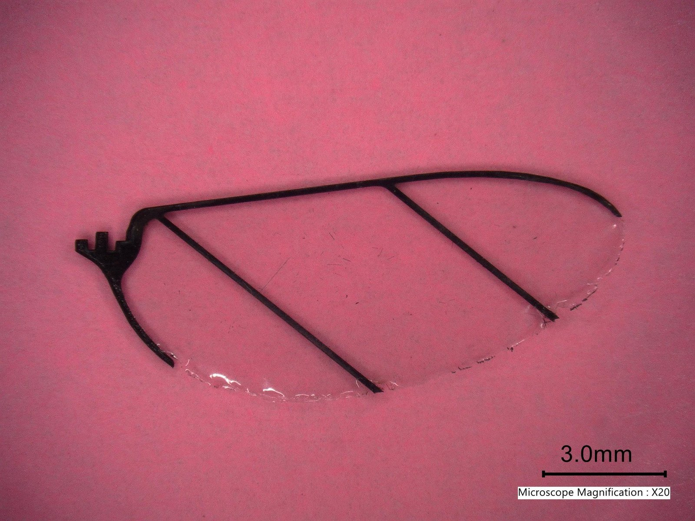
Switching the carbon fiber from 0-90-0 to 0-45-0 layup changed the cutting behaviour immediately — the laser went through far more easily. The 0-45-0 is roughly 90 μm against 170 μm, and its lamination is better, so both thickness and bond quality were working in the same direction.
Re-optimizing dropped the pass count from 160 to 40 and the Q-pulse from 9.00 to 5.00 ns. It is a reminder that these settings are tied to one specific laminate rather than to carbon fiber in general.
The rightmost section of membrane does not release as readily as the rest, and there is some warping where the membrane meets the end of the spar. The intersection is likely fixable by overlapping the carbon fiber cut profile slightly into the start of the membrane cut; the membrane behaviour I do not yet have an explanation for.
The other open question is how the control software sequences its cut paths on larger shapes. Sometimes it traces the whole outline and repeats for the full pass count; sometimes it completes all passes on one segment before moving on. Those deposit heat very differently, and I suspect that is behind the uneven release.
04 — Design & Controls
Built for the Harvard SEAS Design Fair · with Keyi Chen and Evie Eyers
A two-wheeled robot that holds itself upright on a closed-loop controller — full sensing-to-actuation chain from a 6-axis IMU through sensor fusion and PID to a motor driver and geared DC motors, on a Seeeduino XIAO ESP32-S3. Designed, built, debugged, and exhibited over the course of a semester.
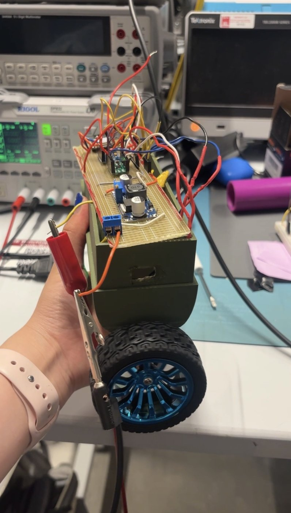
An inverted pendulum has no stable equilibrium, so the robot only stays up because the controller is correcting continuously. The loop runs at roughly 200 Hz: read the MPU6050, estimate the lean angle, compute a PID correction, and drive both motors in the direction that brings the wheels back under the center of mass.
Neither sensor alone gives a usable angle. The accelerometer sees gravity but also every bump and motor vibration; the gyro is smooth but drifts as its bias integrates. A complementary filter blends them by weight:
The gyro handles the short-term response and the small accelerometer term keeps pulling the estimate back toward true vertical, so the drift never accumulates.
On boot the robot takes 1000 gyro samples at rest to measure and subtract its own bias, then 500 samples held upright to capture its balance angle.
The second step is there because the center of mass is not at the geometric center of the chassis, so the angle the robot actually balances at is not 0°. Measuring it at startup rather than assuming vertical means the controller holds the angle that is stable for this particular build, and the integral term is not left working against a constant offset for the whole run.
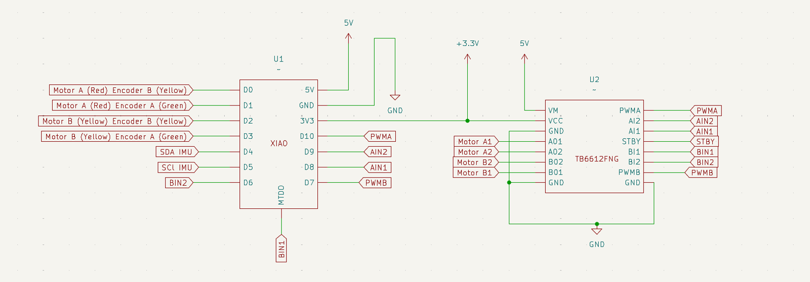
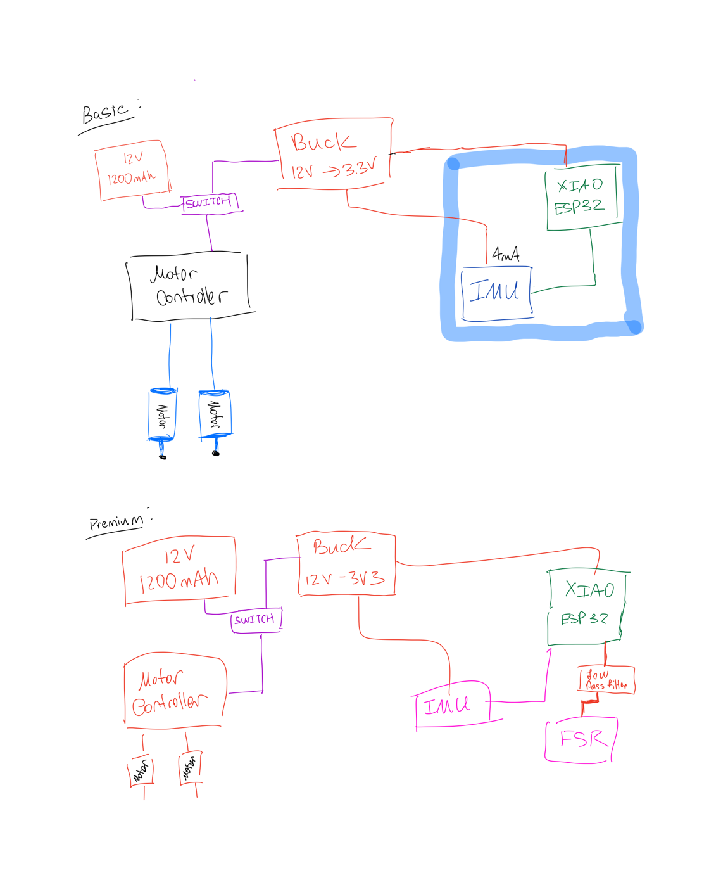
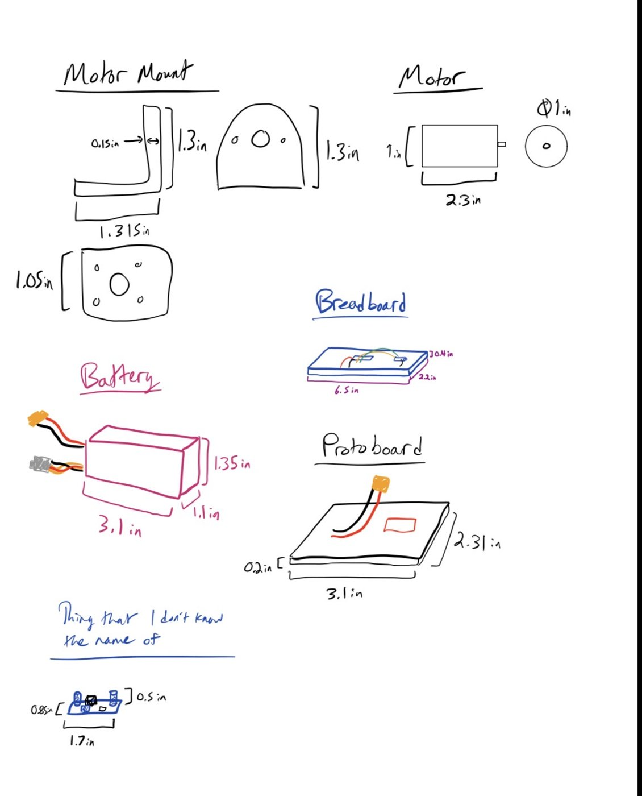
We burned out a TB6612FNG driver during testing the night before the design fair. It was a margin problem rather than a wiring mistake. The part is rated 1.2 A continuous and the motors stall at roughly 1 A, which sounds like enough headroom until you consider how often a balancing robot actually stalls its motors. Every direction reversal passes through zero speed while the controller is still commanding torque.
We all stayed at the SEC that night finding new parts, rebuilding and debugging, and got it running for the fair the next day. We also went over to the robotics club and got car fuses off them, and put one inline as a last precaution so that if the new controller ever saw the same current again the fuse would go instead of the board.
The Pololu DRV8833 was not a drop-in replacement. It has no dedicated PWM pins, so the control scheme had to change: PWM now goes straight onto the direction inputs and speed and direction are encoded together. It also has a lower input voltage ceiling at 10.8 V, which is where the LM2596 buck stage came from.
While rebuilding I also noticed that two pins which read as motor controller inputs on the silkscreen were actually ground. I caught that on the datasheet before wiring anything to them.
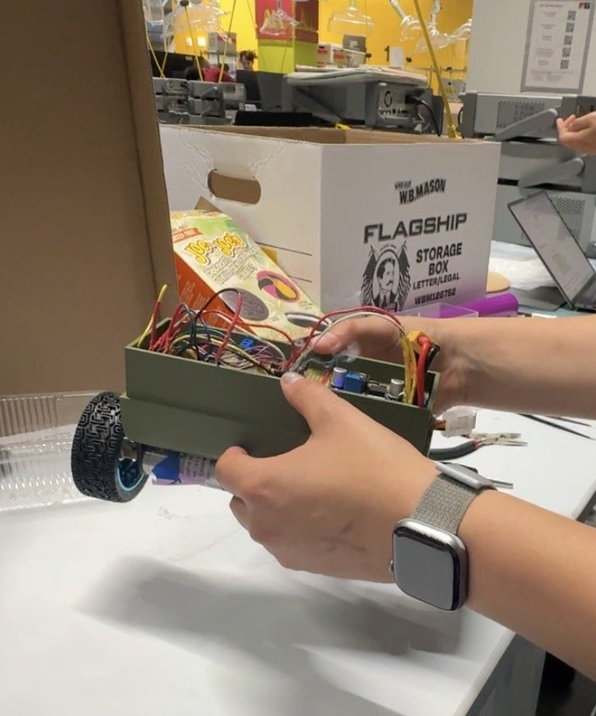
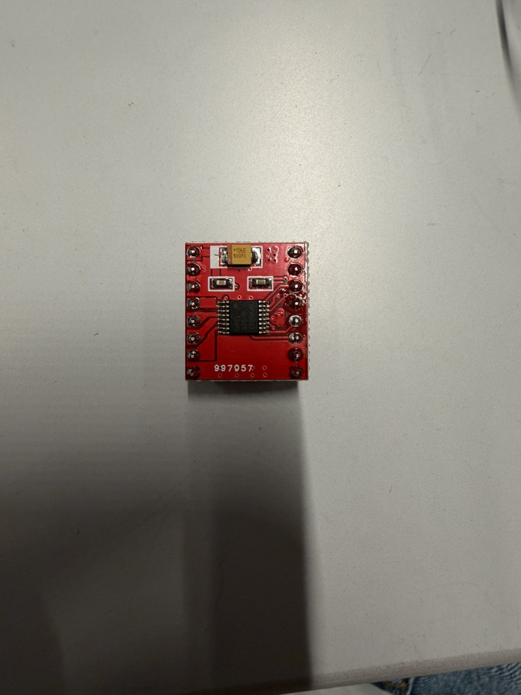
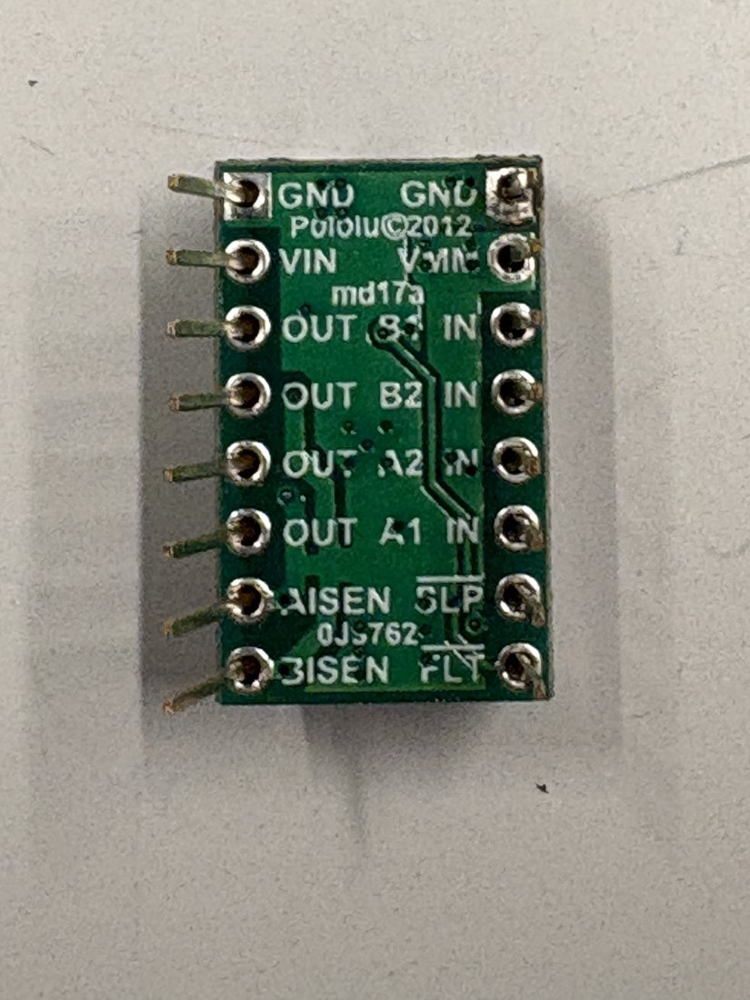
When we tested with a deliberately raised center of mass the robot stopped recovering, and no amount of PID tuning changed that. Tuning only changes how the controller uses the authority it already has, so if no set of gains works it is usually a sign the problem is somewhere else. A higher center of mass means a longer lever arm and more restoring torque required, and the 1:34 motors could not deliver it quickly enough.
The limitation was in the gearing rather than in the controller, so the fix is a hardware one: a lower gear ratio from the same motor family, trading top speed for torque. We ran out of semester before swapping them, but that is the change I would make first.
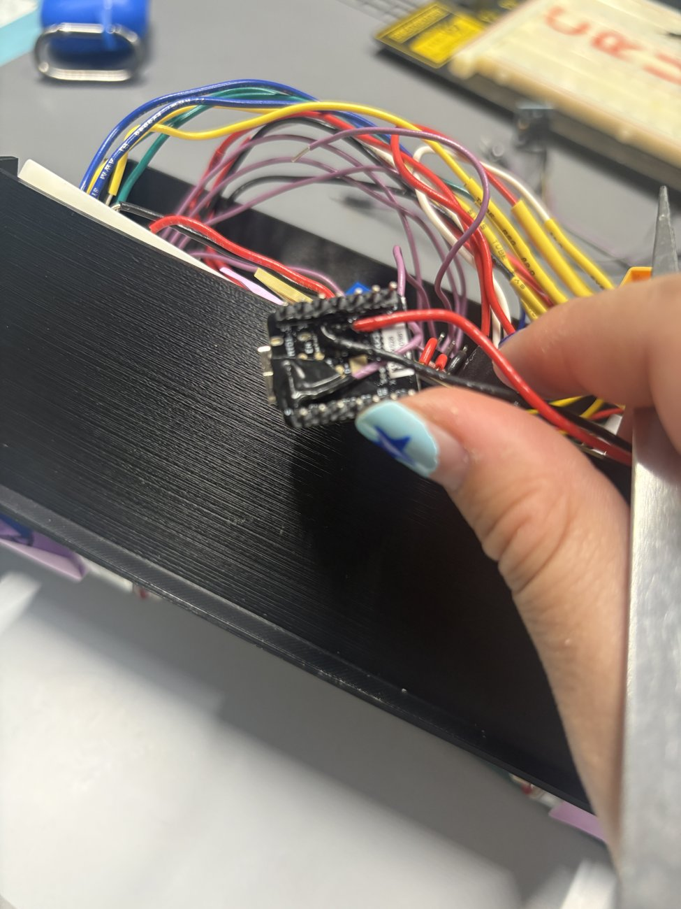
05 — About
I am a sophomore at Harvard College, Class of 2029, concentrating in Mechanical Engineering at SEAS. I am the R&D lead at Harvard Undergraduate Aerospace Collective – Rocketry and an undergraduate researcher at the Harvard Microrobotics Lab.
Completed: ES 51 (Computer Aided Machine Design), ES 50 (Circuits & Digital Systems), Physics 15a (Mechanics and Special Relativity), Math 21a (Multivariable Calculus), Math 21b (Linear Algebra), CS50 (Introduction to Computer Science)
Fall 2026: ES 181 (Engineering Thermodynamics), ES 125 (Mechanical Systems)
Spring 2027: ES 123 (Fluid Mechanics), ES 120 (Solid Mechanics)
SolidWorks · Onshape · Fusion 360 and Fusion 360 CAM · SimScale (FEA) · NASA CEA and RocketCEA · RPA · Python, C/C++ · manual lathe and mill · laser cutting